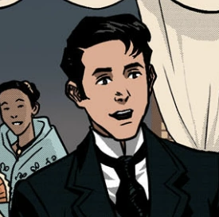

| Characters of Noli Me Tangere | |||||
|---|---|---|---|---|---|
|  | Juan Crisostomo Ibarra | Ibrra was an earnest and idealistic young man. | |||
|
| Capitan Tiago | An influential businessman in San Diego and the father of Maria Clara. | |||
|
| Maria Clara | Daughter of Capitan Tiago and the fiancee of Crisostomo Ibarra. | |||
|
| Padre Damaso | Franciscan priest and was the former town curate of San Diego | |||